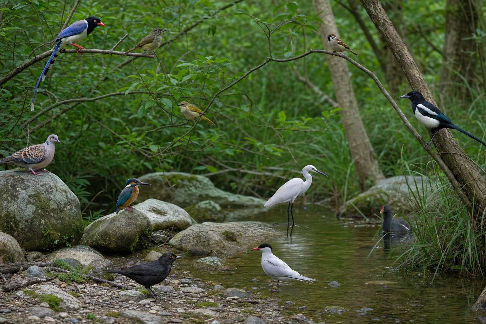
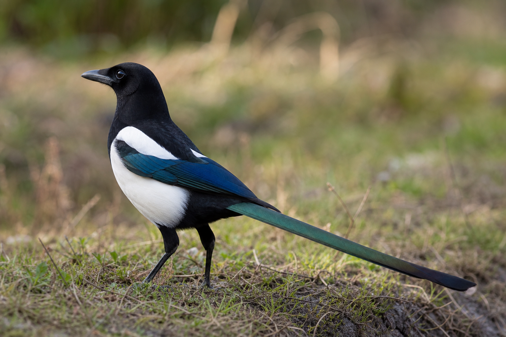

1. 先找鸟
树林观察图
先看环境
再找鸟
已锁定 1 只鸟
去步骤 2，猜猜它最可能是什么。
自然科普 · AI 入门 · 四川鸟类
先在树林里找鸟，再看这只鸟的特写并判断名字，然后听它的鸟叫声，最后再进入 AI 框鸟和分类。

去步骤 2，猜猜它最可能是什么。

观察这只鸟的外形，再判断它是什么。
先看清嘴、羽色和尾巴，再选择答案。答完后会继续听这只鸟的声音。
黄鹂
真实野外录音，不使用合成音。点击按钮就能直接听到。
录音来源：Xeno-canto 公民科学录音库。每条录音按原许可使用。
懂鸟 AI 会先定位图片里的每只鸟，再返回每个鸟框的鸟种候选结果。